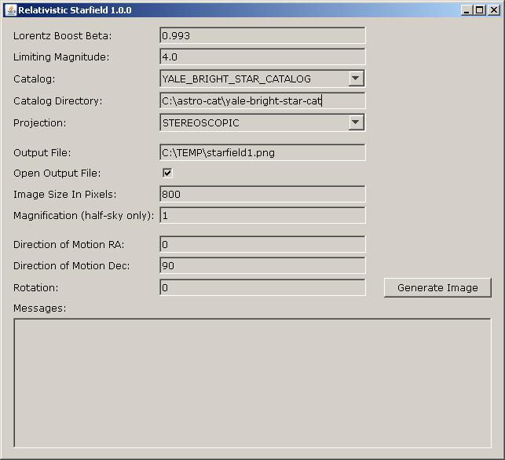

But for a more realistic result, closer to what you would actually see, you need to use more stars - many more stars, even millions. Since an animation using that many stars would not work well in a typical browser, a small desktop application (implemented in the Java programming language, version 1.7.0) has been created for generating such images from large star catalogs. The software is simple, and consists of a single dialog, where you input various parameters, and then generate a single image file. No animation is created, just a single image file. (With the number of stars in the millions, it can take several minutes to generate a single image.)
You don't have to download all of these if you don't want to, but you will need at least one of them. The Tycho-2 catalog gives the most impressive result, but it takes longest to download. Save the data files for each star catalog in some convenient, separate location on your computer. If the data files are zipped, you'll need to unzip them.
Here's an example of how you might arrange the catalogs and their data files:
C:\astro-cat
\henry-draper
catalog.dat
\tycho-2
tyc2.dat.00
tyc2.dat.01
...
tyc2.dat.18
tyc2.dat.19
\yale-bright-star-cat
catalog.txt
The above is just an example.
You can place these data files anywhere you want.
However, you'll need to ensure that the data files for each star catalog are placed in their own separate
directory by themselves, with no other extraneous files.
The names of the files don't matter, but note that if you change the name of a data file to end with '.ignore', then
this application will ignore it. (This is useful when experimenting with different data sets.)
C:\TEMP\> dir /b jgoodies-common-1.7.0.jar jgoodies-forms-1.7.2.jar starfield.jar C:\TEMP> echo %JAVA_HOME% C:\jdk1.7.0 C:\TEMP\> C:\jdk1.7.0\bin\java -jar starfield.jar (If java is on your path, then you may use this style.) C:\TEMP\> java -jar starfield.jarThis will launch the application, which consists of a single dialog:

When the application is running, you'll see that each input field has an explanatory tool-tip, which pops up when the mouse is hovering over the input field. For more information, please see the documentation on input parameters.
Here's a second example, but this time the tool is run as command-line tool only, with no graphical interface. Note that there are 11 parameters passed to the hirondelle.starfield.Main class.
C:\TEMP\> dir /b jgoodies-common-1.7.0.jar jgoodies-forms-1.7.2.jar starfield.jar C:\TEMP> echo %JAVA_HOME% C:\jdk1.7.0 (this command is really on a single line) C:\TEMP\> java -cp starfield.jar -Xmx512m hirondelle.starfield.Main 0.993 5.0 C:\astro-cat\yale-bright-star-cat YALE_BRIGHT_STAR_CATALOG C:\temp\test.png STEREOSCOPIC 800 1 0 90 0